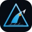

Scenario council + quant forecasts + ledger reconciliation — human approval at every gate.
Apex Ledger is developed on GitLab; GitHub mirrors CI and this static site.
This site is onboarding documentation only. The FastAPI council UI (http://127.0.0.1:8080) and MiroFish backend (:5001) must be started locally, in a dev container, or via Docker Compose.
Always initialize the MiroFish submodule (AGPL, HTTP-only boundary):
git clone --recurse-submodules https://gitlab.com/jeansgray/apex-ledger.git
cd apex-ledger
cp .env.example .env
# Edit .env — never commit secrets
python3 scripts/configure_keys.py # syncs keys into MiroFish env files
uv sync --extra dev
python3 scripts/setup_mirofish.py --no-startGitHub mirror:
git clone --recurse-submodules https://github.com/jeansgray/apex-ledger.gitFull checklist: SETUP.md in the repo.
| Mode | Keys | Behavior |
|---|---|---|
| Demo | None | Uses seeded fixture sim_apex_personal_investor (read-only MiroFish APIs) |
| Live simulations | LLM_API_KEY, ZEP_API_KEY in .env |
Background MiroFish runs (often 5–15 min). Get keys from OpenAI and Zep Cloud. |
After adding keys, run python3 scripts/configure_keys.py and restart both services.
uv python install 3.12
UV_PYTHON=$(uv python find 3.12) uv run --directory vendor/mirofish/backend python run.pyuv run apex-ledger serve --port 8080Open http://127.0.0.1:8080 for the council UI.
From the repo root (requires submodule + .env):
docker compose up --buildApex UI: http://127.0.0.1:8080 · MiroFish: :5001 · Kronos forecasts: :5002
Install Docker Desktop (macOS): Docker install guide.
vendor/mirofish is AGPL-3.0. Do not import MiroFish Python code into src/apex_ledger/. Run MiroFish as a separate process and call it over HTTP via MIROFISH_BASE_URL.